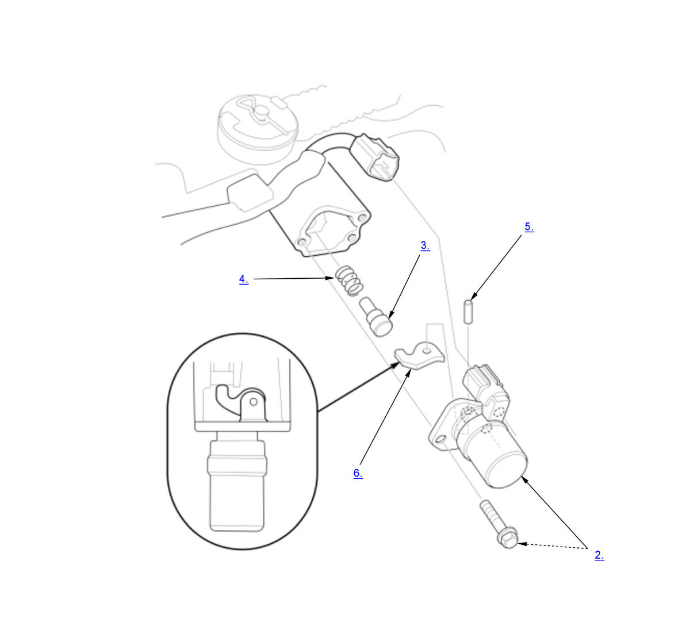

Reverse Lockout Solenoid Disassembly and Reassembly (K20C1 (M/T)) (2017 2018 2019 2020 2021): Disassembly: Procedure
WARNING: This page is about a different variant/trim than selected.
NOTE:
Numbered call-outs in figure pertain to list numbers in following procedure.

Courtesy of HONDA, U.S.A., INC.- Transmission Mount - Remove
- Reverse Lockout Solenoid - Remove
- Select Lock Pin - Remove
- Select Lock Pin Spring - Remove
- Pin - Remove
- Select Lock Cam - Remove